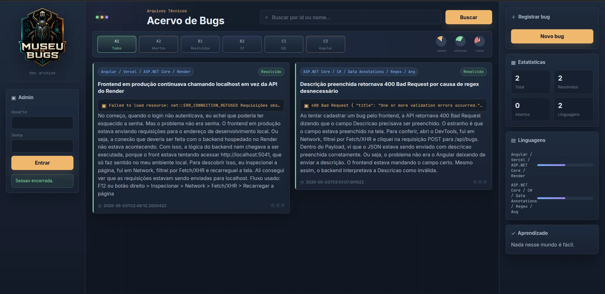

Museu de Bugs
Um acervo público de bugs reais encontrados durante o desenvolvimento, com contexto, causa e solução documentados. Porque erro também é parte do aprendizado.

Transformar erros em material de estudo
A ideia veio de um problema simples: durante o desenvolvimento, muita coisa importante se perde depois que o erro é corrigido. O fix acontece, o deploy sobe e o contexto vai embora. O Museu de Bugs é uma tentativa de preservar esse caminho: o que aconteceu, onde estava a falha, qual foi a hipótese e qual decisão resolveu.
Ele também foi o projeto onde eu aprendi de verdade o que é construir uma aplicação completa. Backend com ASP.NET Core, API REST, Angular consumindo a API, banco de dados, autenticação, CORS e deploy em plataformas diferentes. Tudo em 13 dias de imersão. A quantidade de conteúdo consumida nesse período provavelmente equivale a meses de estudo linear.
O projeto é simples e a estrutura inicial é enxuta, mas ele cumpre o que promete: registrar bugs com contexto real, manter um acervo consultável e documentar evolução de forma honesta e pública.
O que o acervo faz
Acervo público
Qualquer pessoa pode consultar os bugs registrados. Cada entrada tem título, descrição, tags de tecnologia e status de resolução. A busca por id ou nome facilita encontrar casos parecidos com o que você está enfrentando.
Registro com contexto
Cada bug é documentado com mensagem de erro real, causa provável, solução aplicada e nível de risco. A ideia é que o registro sirva tanto para consulta rápida quanto para entender o raciocínio por trás da correção.
Filtros e categorias
Os bugs podem ser filtrados por status (aberto ou resolvido) e por linguagem ou tecnologia. Os filtros ficam em abas na parte superior do acervo para acesso rápido.
Área administrativa
O registro de novos bugs é feito por uma área autenticada. Só o administrador consegue criar, editar e gerenciar as entradas do acervo, mantendo o conteúdo curado e com qualidade.
Como foi construído

C# / .NET
ASP.NET Core • API REST • autenticação

Angular
Frontend • consumo de API • TypeScript

Docker
Containerização • deploy no Render
PostgreSQL
Banco relacional • Supabase • EF Core
O acervo está no ar
Todos os bugs documentados durante meu aprendizado estão públicos e disponíveis para consulta.